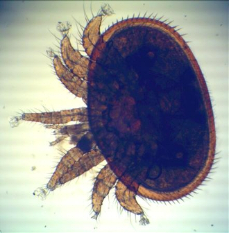
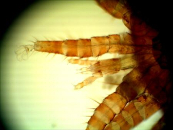
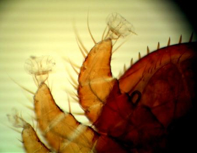
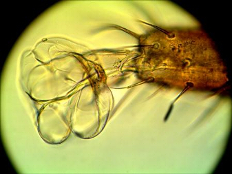

| Πώς το οξαλικό οξύ σκοτώνει τα ακάρεα Ο Gerhard Brüning (εδώ) περιγράφει τις εμπειρίες του με το οξαλικό οξύ ως θεραπεία. Ανακάλυψε ότι το οξαλικό οξύ διαπερνά το ακάρεα μέσω των άκρων τους (ποδιών), με ενστάλαξη, ομιχλοποίηση ή εξάχνωση. Η ομιχλοποίηση και εξάχνωση δεν βλάπτει τις μέλισσες σε αντίθεση με την ενστάλαξη (Η ενστάλαξη του ΟΑ σις μέλισσες καθώς τρώνε το ζαχαρούχο διάλυμα με το οξαλικό οξύ δεν κάνει καλό στα τοιχώματα των εντέρων τους ). Tι συμβαίνει όταν εφαρμόζεται οξαλικό οξύ σε μια κυψέλη: Το οξαλικό οξύ με την μορφή μικροκρυστάλων κολλάει στα άκρα τους (ακάρεα) μέσω ζεύγους κολλητικών λοβών και ύγρανσης που προέρχεται από το πόδι του ακάρεως σχηματίζοντας επιθέματα * (pulvilli) τα οποία δια του αιμολύμματος διεισδύει και μετά από τρεις ώρες το άκαρι είναι νεκρό.Τα ακάρεα προσπαθούν να τα αφαιρέσουν, αλλά δεν μπορούν. * (Στη συνέχεια, οι μικροκρύσταλλοι διασπώνται με ένα μικρό μέρος -παρόμοιο με μια σταγόνα- να παραμένει) Οι μέλισσες δεν βλάπτονται από την ομιχλοποίηση - εξάχνωση επειδή έχουν διαφορετικό μηχανισμό στους κολλητικούς λοβούς τους. | |
| Εικόνες από τους κολλητικούς λοβούς ακάρεων κάτω από μικροσκόπιο | |
|  |  |
|  |  |
| https://en.wikipedia.org/wiki/Hemolymph http://www.varroamilbe.ch/bericht3.pdf (Γερμανικά) | |